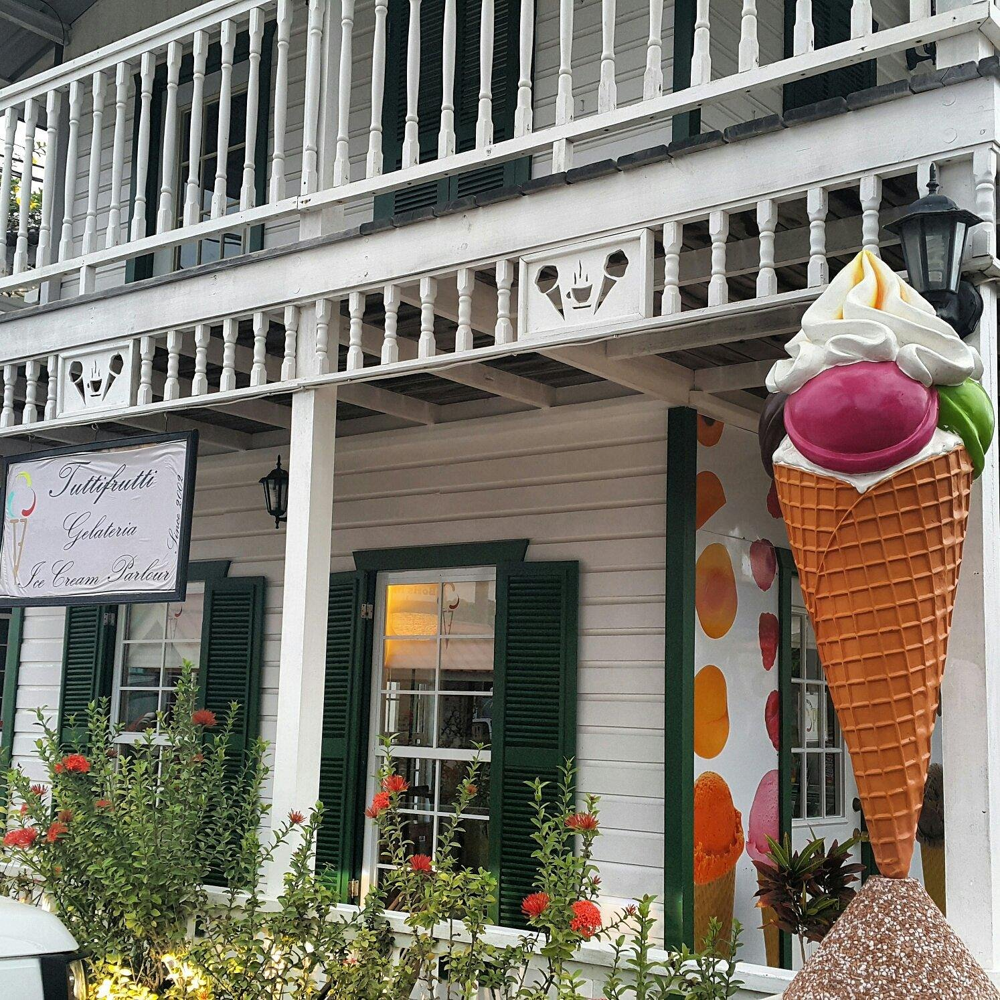
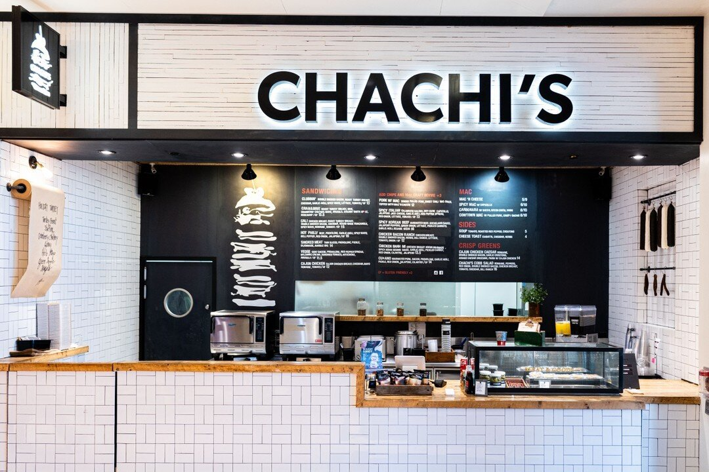
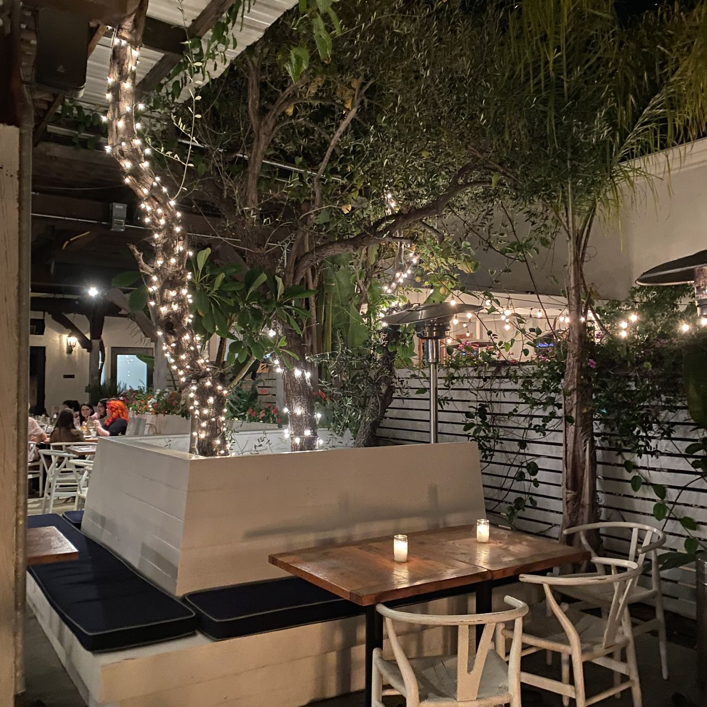
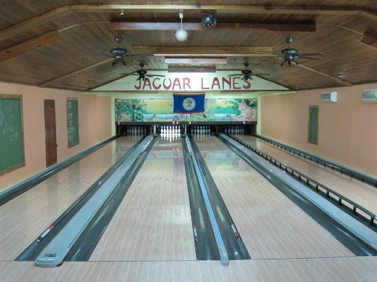
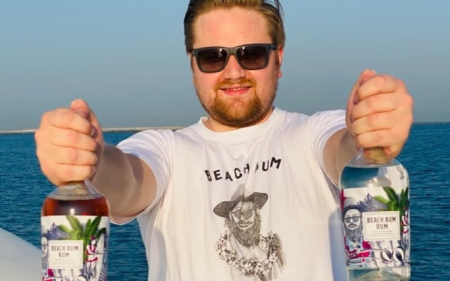

Tutti-Frutti Gelato
Tutti-Frutti Gelato in Placencia is a must-try for anyone with a sweet tooth. This popular spot offers delicious gelato in a variety of flavors, perfect for cooling down on a warm day.

Attractions / Dining
Tutti-Frutti Gelato in Placencia is a must-try for anyone with a sweet tooth. This popular spot offers delicious gelato in a variety of flavors, perfect for cooling down on a warm day.

Located 25 minutes south of Placencia, ChaChi’s offers pizza and live music in a lively atmosphere. It’s a fun spot for a night out with friends or family.

Rumfish y Vino in Placencia offers a great menu and excellent food, making it a popular choice for dining out. Located 25 minutes south of Placencia, it’s worth the drive for a delicious meal.

Rick’s Café on the Placencia Sidewalk offers a variety of dishes in a casual setting. A 20-minute drive south from La Vida Belize, it’s a great spot for a relaxed meal.

Located at Maya Beach at the Azur del Mar, just a 5-minute drive south of Placencia, The Bonefish Grill is known for its friendly service and superb food. It’s a great choice for a delicious meal close to your stay.
For a taste of local Belizean dishes, head to Rum Bum’s. This spot offers a variety of traditional flavors in a relaxed and friendly atmosphere.
Ceiba Beach Resort offers elevated local flavors of Belize in an elegant setting. Enjoy a sophisticated dining experience with dishes that highlight the best of Belizean cuisine.
Close to La Vida Belize and just a 5-minute drive south to Maya Beach, The Green Parrot features a nice setting and excellent food. It's a great place to enjoy a meal with a view.
Inky’s Grill offers superb food in a lovely setting, just about 6 miles south of Placencia. Don’t miss out on their Tutti-Frutti Gelato for a sweet treat after your meal.
Located a 20-minute drive south of Placencia, Jaguar Lanes is known for its great pizza and a variety of other dishes. This casual spot is perfect for a laid-back meal with family and friends.